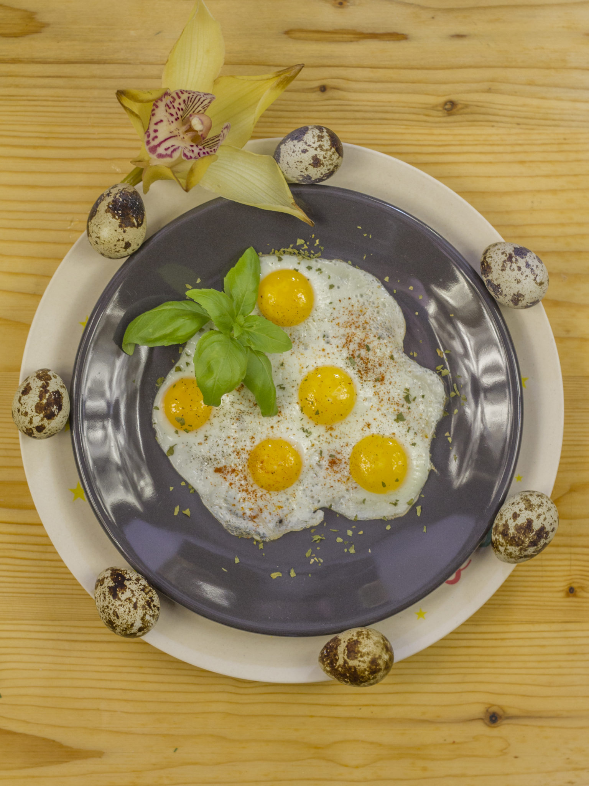
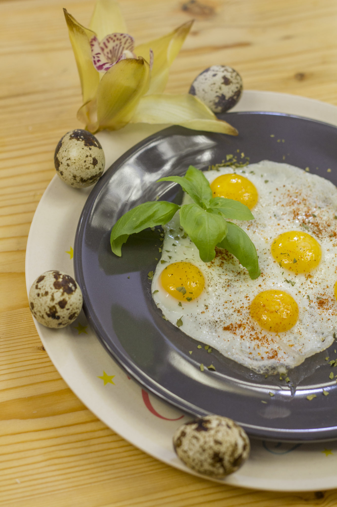
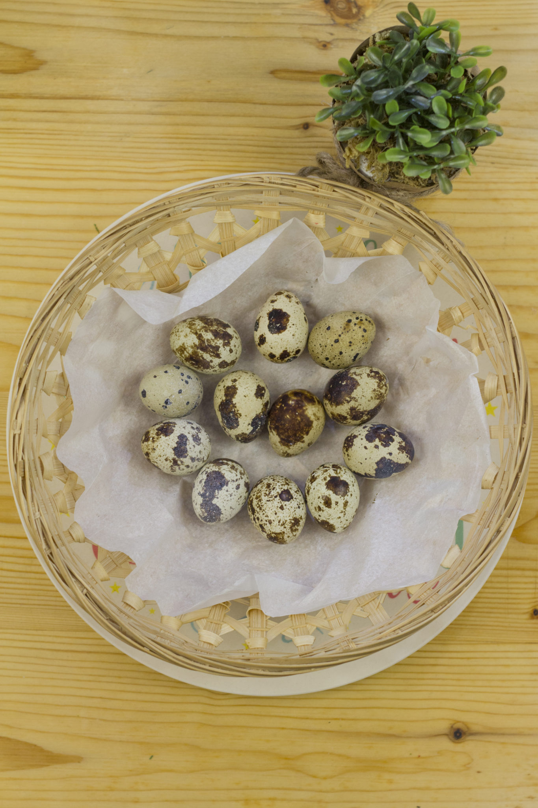

Karácsony 2. napján fürjtojás reggelire.
A napokban a munkahelyen, a termelői piacon lehetett kapni fürjtojást és mivel korábban én még nem ettem, vettem is néhány dobozzal Máté Gábor őstermelőtől.
Érdekessége, hogy fogyasztható:
nyersen, cukorral, mézzel és gyümölcslével elkeverve;
főzve magában, levesbetétként, saláták, pizzák díszítésére;
kitűnő arcpakoláshoz ránctalanító és bőrfiatalító hatása miatt.



Jótékony hatásai:
javítja az immunrendszert,
csökkenti az allergia és az asztma tüneteit,
kúraszerűen alkalmazva sikeresen javítja a szív és érrendszeri, valamint gyomor és hasnyálmirigy problémákkal küszködő betegség állapotát,
megszünteti a náthás és az influenzát,
jótékony a fogyasztása a fogszuvasodásra és a hajhullásra,
A,D,E vitamint és vasat tartalmaz,
minimális a koleszterin tartalma,
biztonságos, nem fertőzi meg a szalmonella baktérium.
Én tükörtojást sütöttem belőlük és pirospaprikával, őrölt tarkaborssal és himalája sóval ízesítettem.
Szép napot Nektek!